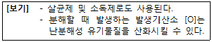
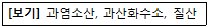

위험물기능사 (2015-01-25 기출문제)
1과목: 화재 예방과 소화방법
1. 제3종 분말 소화약제의 열분해 반응식을 옳게 나타낸 것은?
- NH4H2PO4 → HP03＋NH3＋H2O
- 2KNO3 → 2KNO2＋O2
- KClO4 → KCl＋2O2
- 2CaHCO3 → 2CaO＋H2CO3
(정답률: 83%)

2. 위험물안전관리법령상 제2류 위험물 중 지정수량이 500kg인 물질에 의한 화재는?
- A급 화재
- B급 화재
- C급 화재
- D급 화재
(정답률: 83%)
3. 위험물제조소등의 용도폐지신고에 대한 설명으로 옳지 않은 것은?
- 용도폐지 후 30일 이내에 신고하여야 한다.
- 완공검사필증을 첨부한 용도폐지신고서를 제출하는 방법으로 신고한다.
- 전자문서로 된 용도폐지신고서를 제출하는 경우에도 완공검사필증을 제출하여야 한다.
- 신고의무의 주체는 해당 제조소등의 관계인이다.
(정답률: 70%)
4. 할로겐 화합물의 소화약제 중 할론 2402의 화학식은?
- C2Br4F2
- C2Cl4F2
- C2Cl4Br2
- C2F4Br2
(정답률: 82%)
5. 위험물제조소등에 설치하여야 하는 자동화재탐지설비의 설치기준에 대한 설명 중 틀린 것은?
- 자동화재탐지설비의 경계구역은 건축물 그 밖의 공작물의 2 이상의 층에 걸치도록 할 것
- 하나의 경계구역에서 그 한 변의 길이는 50m(광전식분리형 감지기를 설치할 경우에는 100m) 이하로 할 것
- 자동화재탐지설비의 감지기는 지붕 또는 벽의 옥내에 면한 부분에 유효하게 화재의 발생을 감지할 수 있도록 설치할 것
- 자동화재탐지설비에는 비상전원을 설치할 것
(정답률: 80%)
6. 다음 중 수소, 아세틸렌과 같은 가연성 가스가 공기 중 누출되어 연소하는 형식에 가장 가까운 것은?
- 확산 연소
- 증발 연소
- 분해 연소
- 표면 연소
(정답률: 80%)
7. 알코올류 20000L에 대한 소화설비 설치 시 소요단위는?
- 5
- 10
- 15
- 20
(정답률: 57%)
8. 위험물안전관리법령상 분말소화설비의 기준에서 규정한 전역방출방식 또는 국소방출방식 분말소화설비의 가압용 또는 축압용가스에 해당하는 것은?
- 네온가스
- 아르곤가스
- 수소가스
- 이산화탄소가스
(정답률: 78%)
9. 과산화칼륨의 저장창고에서 화재가 발생하였다. 다음 중 가장 적합한 소화약제는?
- 물
- 이산화탄소
- 마른모래
- 염산
(정답률: 89%)
10. 위험물안전관리법령에 의해 옥외저장소에 저장을 허가받을 수 없는 위험물은?
- 제2류 위험물 중 유황(금속제드럼에 수납)
- 제4류 위험물 중 가솔린(금속제드럼에 수납)
- 제6류 위험물
- 극제해상위험물규칙(IMDG Code)에 적합한 용기에 수납된 위험물
(정답률: 53%)
11. 플래시오버에 대한 설명으로 틀린 것은?
- 국소화재에서 실내의 가연물들이 연소하는 대화재로의 전이
- 환기지배형 화재에서 연료지배형 화재로의 전이
- 실내의 천정 쪽에 축적된 미연소 가연성 증기나 가스를 통한 화염의 급격한 전파
- 내화건축물의 실내화재 온도 상황으로 보아 성장기에서 최성기로의 진입
(정답률: 68%)
12. 위험물안전관리법령상 제3류 위험물 중 금수성물질의 화재에 적응성이 있는 소화설비는?
- 탄산수소염류의 분말소화설비
- 이산화탄소소화설비
- 할로겐화합물소화설비
- 인산염류의 분말소화설비
(정답률: 86%)
13. 제1종, 제2종, 제3종 분말소화약제의 주성분에 해당하지 않는 것은?
- 탄산수소나트륨
- 황산마그네슘
- 탄산수소칼륨
- 인산암모늄
(정답률: 77%)
14. 가연성액화가스의 탱크 주위에서 화재가 발생한 경우에 탱크의 가열로 인하여 그 부분의 강도가 약해져 탱크가 파열됨으로 내부의 가열된 액화가스가 급속히 팽창하면서 폭발하는 현상은?
- 블레비(BLEVE) 현상
- 보일오버(Boil Over) 현상
- 플래시백(Flash Back) 현상
- 백드래프트(Back Draft) 현상
(정답률: 70%)
15. 소화효과에 대한 설명으로 틀린 것은?
- 기화잠열이 큰 소화약제를 사용할 경우 냉각소화 효과를 기대할 수 있다.
- 이산화탄소에 의한 소화는 주로 질식소화로 화재를 진압한다.
- 할로겐화합물 소화약제는 주로 냉각소화를 한다.
- 분말소화약제는 질식효과와 부촉매효과 등으로 화재를 진압한다.
(정답률: 76%)
16. 건조사와 같은 불연성 고체로 가연물을 덮는 것은 어떤 소화에 해당하는가?
- 제거소화
- 질식소화
- 냉각소화
- 억제소화
(정답률: 89%)
17. 금속칼륨과 금속나트륨은 어떻게 보관하여야 하는가?
- 공기 중에 노출하여 보관
- 물속에 넣어서 밀봉하여 보관
- 석유 속에 넣어서 밀봉하여 보관
- 그늘지고 통풍이 잘되는 곳에 산소 분위기에서 보관
(정답률: 85%)
18. 위험물제조소등에 설치하는 고정식의 포소화설비의 기준에서 포헤드방식의 포헤드는 방호대상물의 표면적 몇 ㎡ 당 1개 이상의 헤드를 설치하여야 하는가?
- 5
- 9
- 15
- 30
(정답률: 58%)
19. 위험물안전관리법령에 따른 스프링클러헤드의 설치방법에 대한 설명으로 옳지 않은 것은?
- 개방형헤드는 반사판으로부터 하방으로 0.45m, 수평방향으로 0.3m 공간을 보유할 것
- 폐쇄형헤드는 가연성물질 수납부분에 설치 시 반사판으로부터 하방으로 0.9m, 수평방향으로 0.4m의 공간을 확보할 것
- 폐쇄형헤드 중 개구부에 설치하는 것은 당해 개구부의 상단으로부터 높이 0.15m 이내의 벽면에 설치할 것
- 폐쇄형헤드설치 시 급배기용 덕트의 긴변의 길이가 1.2m를 초과하는 것이 있는 경우에는 당해 덕트의 윗부분에도 헤드를 설치할 것
(정답률: 63%)
20. Mg, Na의 화재에 이산화탄소 소화기를 사용하였다. 화재현장에서 발생되는 현상은?
- 이산화탄소가 부착면을 만들어 질식소화 된다.
- 이산화탄소가 방출되어 냉각소화 된다.
- 이산화탄소가 Mg, Na과 반응하여 화재가 확대 된다.
- 부촉매효과에 의해 소화 된다.
(정답률: 70%)
2과목: 위험물의 화학적 성질 및 취급
21. 위험물안전관리법령의 제3류 위험물 중 금수성물질에 해당하는 것은?
- 황린
- 적린
- 마그네슘
- 칼륨
(정답률: 54%)
22. 다음 중 위험성이 더욱 증가하는 경우는?
- 황린을 수산화칼슘 수용액에 넣었다.
- 나트륨을 등유 속에 넣었다.
- 트리에틸알류미늄 보관용기 내에 가스를 봉입시켰다.
- 니트로셀룰로오스를 알코올 수용액에 넣었다.
(정답률: 66%)
23. 적린의 성질에 대한 설명 중 옳지 않은 것은?
- 황린과 성분원소가 같다.
- 발화온도는 황린보다 낮다.
- 물, 이황화탄소에 녹지 않는다.
- 브롬화인에 녹는다.
(정답률: 59%)
24. 과산화칼륨과 과산화마그네슘이 염산과 각각 반응했을 때 공통으로 나오는 물질의 지정수량은?
- 50L
- 100kg
- 300kg
- 1000L
(정답률: 65%)
25. 트리메틸알루미늄이 물과 반응시 생성되는 물질은?
- 산화알루미늄
- 메탄
- 메틸알코올
- 에탄
(정답률: 72%)
26. 소화설비의 기준에서 용량 160L 팽창질석의 능력 단위는?
- 0.5
- 1.0
- 1.5
- 2.5
(정답률: 71%)
27. 위험물안전관리법령상 위험물 운반 시 차광성이 있는 피복으로 덮지 않아도 되는 것은?
- 제1류 위험물
- 제2류 위험물
- 제3류 위험물 중 자연발화성물질
- 제4류 위험물
(정답률: 65%)
28. 이동탱크저장소에 의한 위험물의 운송 시 준수하여야 하는 기준에서 다음 중 어떤 위험물을 운송할 때 위험물운송자는 위험물안전카드를 휴대하여야 하는가?
- 특수인화물 및 제1석유류
- 알코올류 및 제2석유류
- 제3석유류 및 동식물류
- 제4석유류
(정답률: 84%)
29. 위험물안전관리법령상 총리령으로 정하는 제1류 위험물에 해당하지 않는 것은?
- 과요오드산
- 질산구아니딘
- 차아염소산염류
- 염소화이소시아눌산
(정답률: 78%)
30. 흑색화약의 원료로 사용되는 위험물의 유별을 옳게 나타낸 것은?
- 제1류, 제2류
- 제1류, 제4류
- 제2류, 제4류
- 제4류, 제5류
(정답률: 59%)
31. 다음 물질 중 제1류 위험물이 아닌 것은?
- Na2O2
- NaClO3
- NH4ClO4
- HClO4
(정답률: 68%)
32. 소화난이도등급 Ⅰ의 옥내저장소에 설치하여야 하는 소화설비에 해당하지 않는 것은?
- 옥외소화전설비
- 연결살수설비
- 스프링클러설비
- 물분무소화설비
(정답률: 70%)
33. 적린의 위험성에 관한 설명 중 옳은 것은?
- 공기 중에 방치하면 폭발한다.
- 산소와 반응하여 포스핀가스를 발생한다.
- 연소 시 적색의 오산화인이 발생한다.
- 강산화제와 혼합하면 충격·마찰에 의해 발화할 수 있다.
(정답률: 51%)
34. 디에틸에테르에 대한 설명으로 옳은 것은?
- 연소하면 아황산가스를 발생하고, 마취제로 사용한다.
- 증기는 공기보다 무거우므로 물속에 보관한다.
- 에탄올을 진한 황산을 이용해 축합반응 시켜 제조할 수 있다.
- 제4류 위험물 중 연소범위가 좁은 편에 속한다.
(정답률: 43%)
35. 위험물제조소에 설치하는 안전장치 중 위험물의 성질에 따라 안전밸브의 작동이 곤란한 가압설비에 한하여 설치하는 것은?
- 파괴판
- 안전밸브를 병용하는 경보장치
- 감압측에 안전밸브를 부착한 감압밸브
- 연성계
(정답률: 74%)
36. 트리니트로톨루엔의 성질에 대한 설명 중 옳지 않은 것은?
- 담황색의 결정이다.
- 폭약으로 사용된다.
- 자연분해의 위험성이 적어 장기간 저장이 가능하다.
- 조해성과 흡습성이 매우 크다.
(정답률: 50%)
37. 과산화나트륨이 물과 반응하면 어떤 물질과 산소를 발생하는가?
- 수산화나트륨
- 수산화칼륨
- 질산나트륨
- 아염소산나트륨
(정답률: 78%)
38. 다음 중 물에 녹고 물보다 가벼운 물질로 인화점이 가장 낮은 것은?
- 아세톤
- 이황화탄소
- 벤젠
- 산화프로필렌
(정답률: 47%)
39. 과염소산칼륨과 가연성고체 위험물이 혼합되는 것은 위험하다. 그 주된 이유는 무엇인가?
- 전기가 발생하고 자연 가열되기 때문이다.
- 중합반응을 하여 열이 발생되기 때문이다.
- 혼합하면 과염소산칼륨이 연소하기 쉬운 액체로 변하기 때문이다.
- 가열, 충격 및 마찰에 의하여 발화·폭발 위험이 높아지기 때문이다.
(정답률: 76%)
40. 유황의 성질을 설명한 것으로 옳은 것은?
- 전기의 양도체이다.
- 물에 잘 녹는다.
- 연소하기 어려워 분진 폭발의 위험성은 없다.
- 높은 온도에서 탄소와 반응하여 이황화탄소가 생긴다.
(정답률: 62%)
41. 위험물의 품명 분류가 잘못된 것은?
- 제1석유류 : 휘발유
- 제2석유류 : 경유
- 제3석유류 : 포름산
- 제4석유류 : 기어유
(정답률: 76%)
42. 다음 중 발화점이 가장 낮은 것은?
- 이황화탄소
- 산화프로필렌
- 휘발유
- 메탄올
(정답률: 51%)
43. 제5류 위험물의 위험성에 대한 설명으로 옳지 않은 것은?
- 가연성 물질이다.
- 대부분 외부의 산소 없이도 연소하며 연소속도가 빠르다.
- 물에 잘 녹지 않으며 물과의 반응위험성이 크다.
- 가열, 충격, 타격 등에 민감하며 강산화제 또는 강산류와 접촉 시 위험하다.
(정답률: 61%)
44. 질산칼륨에 대한 설명 중 옳은 것은?
- 유기물 및 강산에 보관할 때 매우 안정하다.
- 열에 안정하여 1000℃를 넘는 고온에서도 분해되지 않는다.
- 알코올에는 잘 녹으나 물, 글리세린에는 잘 녹지 않는다.
- 무색, 무취의 결정 또는 분말로서 화약 원료로 사용된다.
(정답률: 58%)
45. [보기]에서 설명하는 물질은 무엇인가?

- HClO4
- CH3OH
- H2O2
- H2SO4
(정답률: 62%)
46. [보기]의 위험물 중 비중이 물보다 큰 것은 모두 몇 개인가?

- 0
- 1
- 2
- 3
(정답률: 77%)
47. 다음 중 위험물안전관리법령상 위험물제조소와의 안전거리가 가장 먼 것은?
- 「고동교육법」에서 정하는 학교
- 「의료법」에 따른 병원급 의료기관
- 「고압가스 안전관리법」에 의하여 허가를 받은 고압가스제조시설
- 「문화재보호법」에 의한 유형문화재와 기념물 중 지정문화재
(정답률: 77%)
48. 칼륨을 물에 반응시키면 격렬한 반응이 일어난다. 이 때 발생하는 기체는 무엇인가?
- 산소
- 수소
- 질소
- 이산화탄소
(정답률: 74%)
49. 위험물안전관리법령상의 위험물 운반에 관한 기준에서 액체위험물은 운반용기 내용적의 몇 % 이하의 수납율로 수납하여야 하는가?
- 80
- 85
- 90
- 98
(정답률: 84%)
50. 메틸알코올의 위험성으로 옳지 않은 것은?
- 나트륨과 반응하여 수소기체를 발생한다.
- 휘발성이 강하다.
- 연소범위가 알코올류 중 가장 좁다.
- 인화점이 상온(25℃)보다 낮다.
(정답률: 58%)
51. 위험물제조소의 건축물 구조기준 중 연소의 우려가 있는 외벽은 출입구외의 개구부가 없는 내화구조의 벽으로 하여야 한다. 이 때 연소의 우려가 있는 외벽은 제조소가 설치된 부지의 경계선에서 몇 m 이내에 있는 외벽을 말하는가? (단, 단층 건물일 경우이다.)
- 3
- 4
- 5
- 6
(정답률: 57%)
52. 다음 중 위험물안전관리법령상 제6류 위험물에 해당하는 것은?
- 황산
- 염산
- 질산염류
- 할로겐간화합물
(정답률: 72%)
53. 질산이 직사일광에 노출될 때 어떻게 되는가?
- 분해되지는 않으나 붉은 색으로 변한다.
- 분해되지는 않으나 녹색으로 변한다.
- 분해되어 질소를 발생한다.
- 분해되어 이산화질소를 발생한다.
(정답률: 61%)
54. 위험물안전관리법령상 제2류 위험물의 위험등급에 대한 설명으로 옳은 것은?
- 제2류 위험물은 위험등급 Ⅰ에 해당되는 품명이 없다.
- 제2류 위험물은 위험등급 Ⅲ에 해당되는 품명은 지정 수량이 500kg인 품명만 해당된다.
- 제2류 위험물 중 황화린, 적린, 유황 등 지정수량이 100kg인 품명은 위험등급 Ⅰ에 해당한다.
- 제2류 위험물 중 지정수량이 1000kg인 인화성고체는 위험등급 Ⅱ에 해당한다.
(정답률: 66%)
55. 위험물 저장탱크의 공간용적은 탱크 내용적의 얼마 이상, 얼마 이하로 하는가?
- 1/100 이상, 3/100 이하
- 2/100 이상, 5/100 이하
- 5/100 이상, 10/100 이하
- 10/100 이상, 20/100 이하
(정답률: 78%)
56. 칼륨이 에틸알코올과 반응 할 때 나타나는 현상은?
- 산소가스를 생성한다.
- 칼륨에틸레이트를 생성한다.
- 칼륨과 물이 반응할 때와 동일한 생성물이 나온다.
- 에틸알코올이 산화되어 아세트알데히드를 생성한다.
(정답률: 50%)
57. 지정수량 20배의 알코올류를 저장하는 옥외탱크저장소의 경우 펌프실 외의 장소에 설치하는 펌프설비의 기준으로 옳지 않은 것은?
- 펌프설비 주위에는 3m 이상의 공지를 보유한다.
- 펌프설비 그 직하의 지반면 주위에 높이 0.15m 이상의 턱을 만든다.
- 펌프설비 그 직하의 지반면의 최저부에는 집유설비를 만든다.
- 집유설비에는 위험물이 배수구에 유입되지 않도록 유분리장치를 만든다.
(정답률: 50%)
58. 제5류 위험물 중 유기과산화물 30kg과 히드록실아민 500kg을 함께 보관하는 경우 지정수량의 몇 배인가?
- 3배
- 8배
- 10배
- 18배
(정답률: 74%)
59. 위험물안전관리법령상 품명이 금속분에 해당하는 것은? (단, 150㎛의 체를 통과하는 것이 50wt% 이상인 경우이다.)
- 니켈분
- 마그네슘분
- 알루미늄분
- 구리분
(정답률: 68%)
60. 아세톤의 성질에 대한 설명으로 옳은 것은?
- 자연발화성 때문에 유기요제로서 사용할 수 없다.
- 무색, 무취이고 겨울철에 쉽게 응고한다.
- 증기비중은 약 0.79이고 요오드프롬 반응을 한다.
- 물에 잘 녹으며 끓는 점이 60℃보다 낮다.
(정답률: 54%)
이유는 NH4H2PO4 분자가 열에 의해 분해되면, NH3, H2O, 그리고 HP03으로 분해됩니다. 이것은 분해 반응입니다.